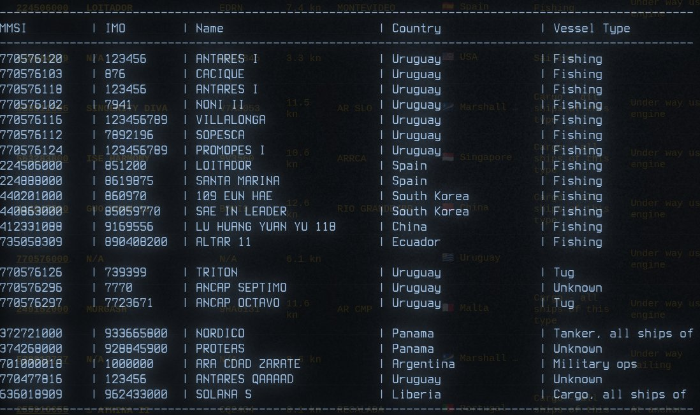
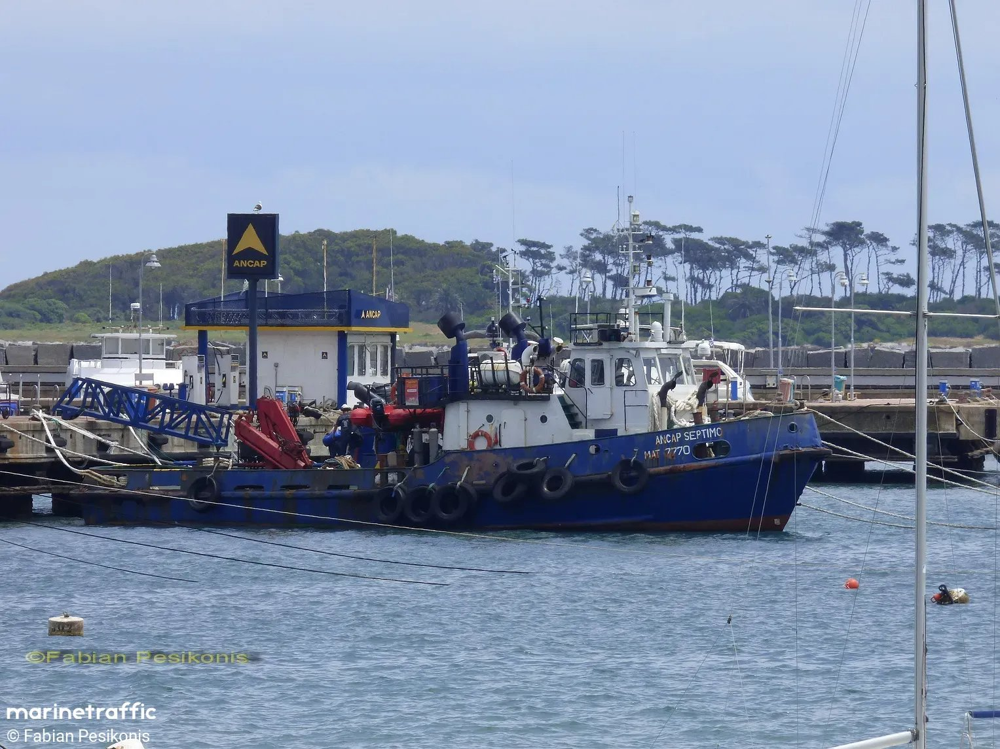
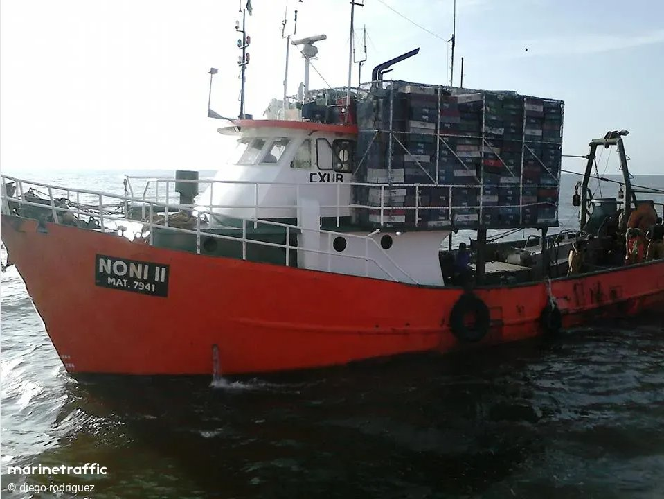
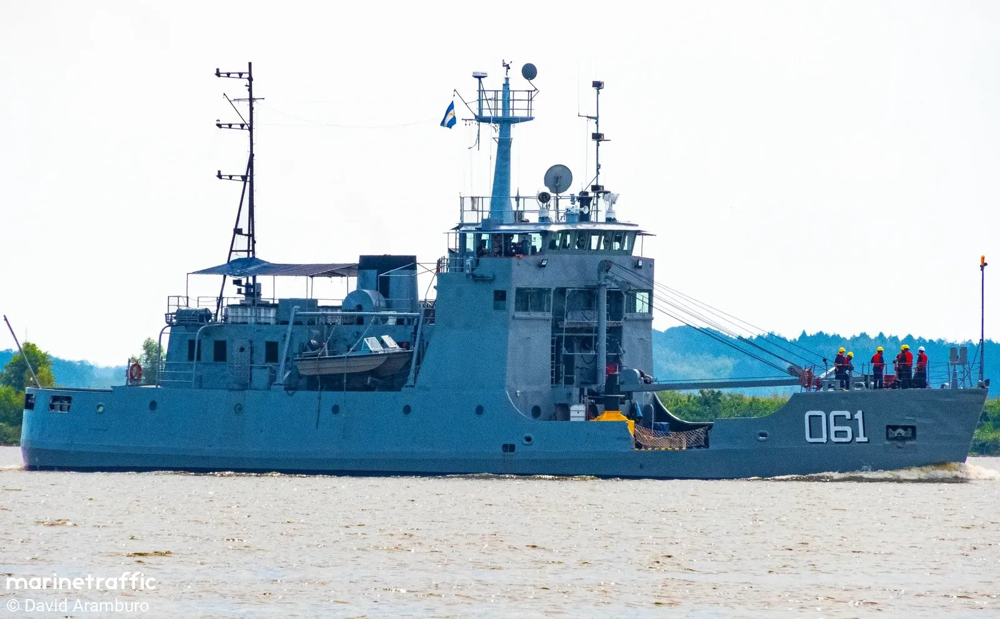
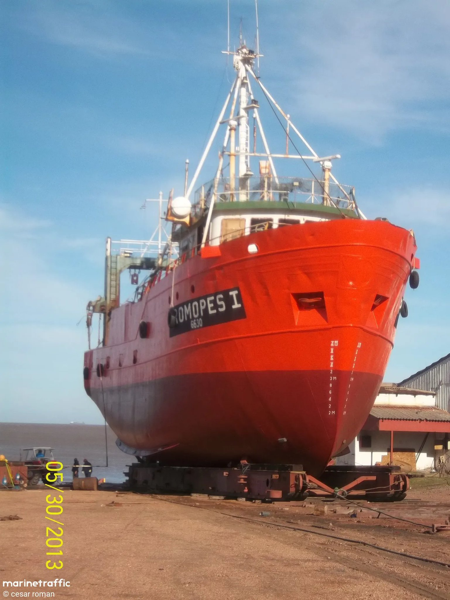
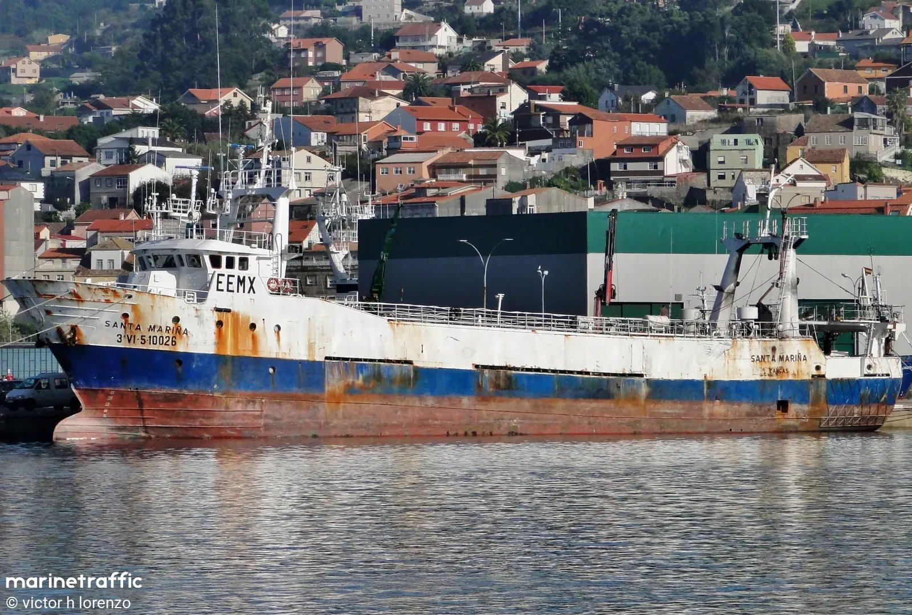
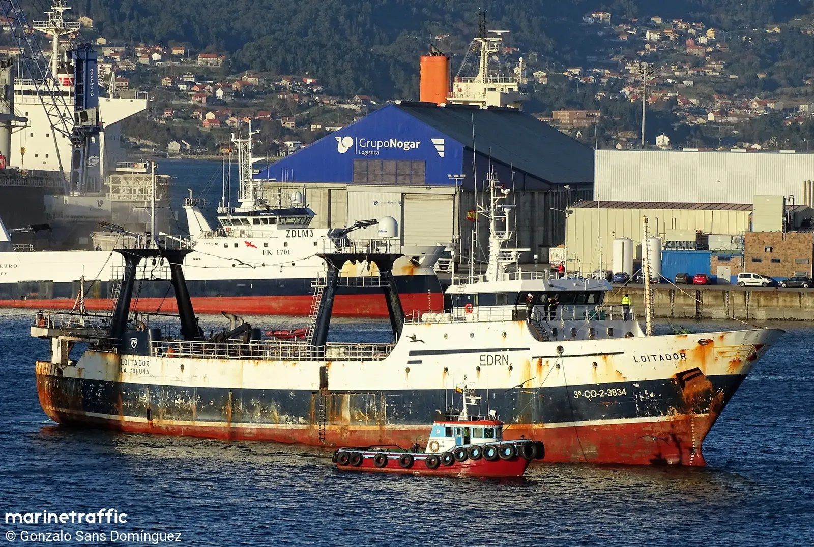
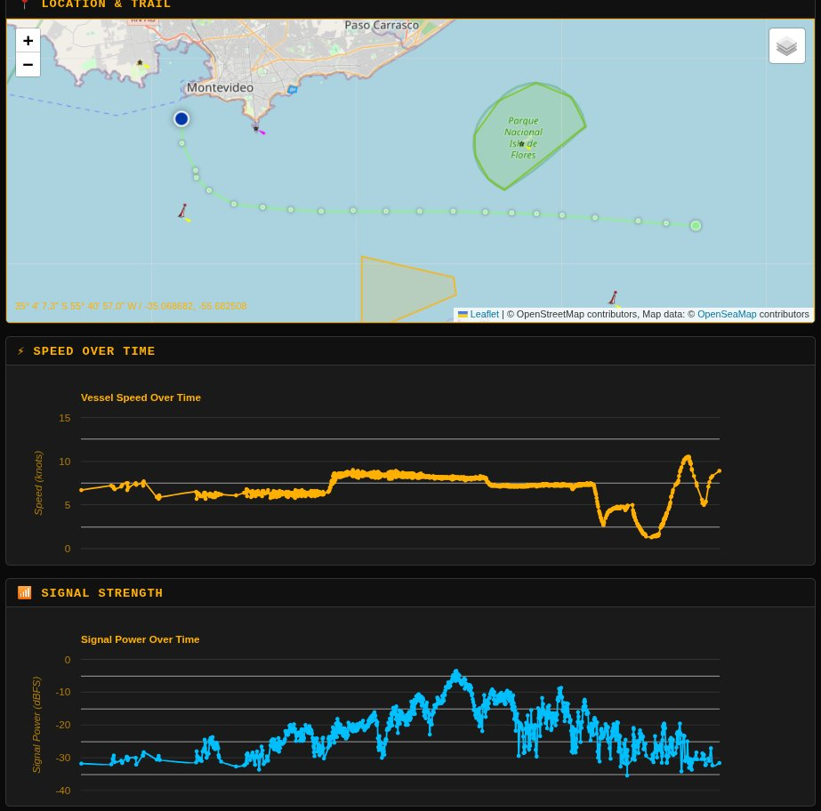
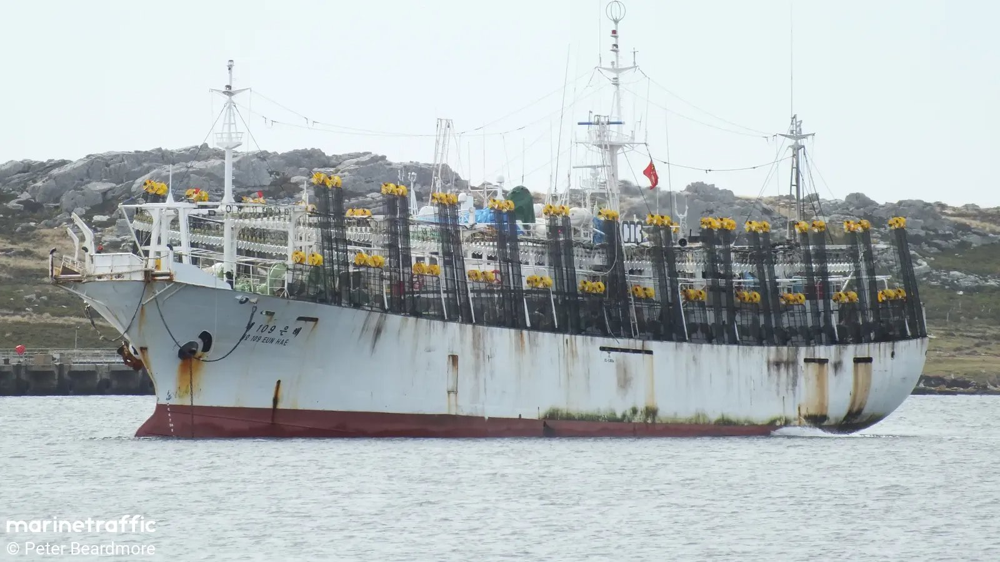

Anomalías de IMO en datos AIS del Río de la Plata
10 de abril de 2026
Índice
Al analizar los datos AIS capturados en el Río de la Plata aparecen buques cuyo número IMO no cumple con el estándar internacional. El IMO es el identificador de trazabilidad global de los buques: si está adulterado, el buque puede operar sin dejar rastro verificable.
📄 Datos: la tabla completa de buques con anomalías de IMO documentados en este artículo está disponible para descargar: buques.csv — 16 registros con nombre, IMO en AIS, IMO real, bandera y categoría de anomalía.
¿Qué es el número IMO?

Validación del checksum IMO
El número IMO es un identificador único de 7 dígitos asignado por la Organización Marítima Internacional a cada buque, y lo acompaña de por vida independientemente de cambios de nombre, bandera o propietario. Es la base de la trazabilidad marítima global.
No basta con tener 7 dígitos: el IMO incluye un dígito de control (checksum) que permite validar matemáticamente si el número es legítimo. Los primeros 6 dígitos se multiplican por los pesos 7, 6, 5, 4, 3 y 2 respectivamente; la suma debe ser congruente con el séptimo dígito.
En los datos AIS del Río de la Plata aparecen valores que no cumplen ni con el formato ni con el checksum. A continuación se clasifican los distintos tipos de anomalía encontrados.
IMO demasiado cortos
El primer tipo de anomalía son números con menos de 7 dígitos. En algunos casos coinciden con el número de matrícula local del buque, lo que sugiere que se ingresó ese dato en el campo IMO por error o de forma intencional.
| IMO en AIS | Buque | Observación |
|---|---|---|
| 876 | CACIQUE 🇺🇾 | 3 dígitos |
| 7941 | NONI II 🇺🇾 | 4 dígitos — coincide con matrícula |
| 7770 | ANCAP SEPTIMO 🇺🇾 | 4 dígitos — coincide con matrícula |
| 739399 | TRITON 🇺🇾 | 6 dígitos |
| 851200 | LOITADOR 🇪🇸 | 6 dígitos — ver también sección 4 |
| 860970 | 109 EUN HAE 🇰🇷 | 6 dígitos — ver también sección 5 |

IMO cortos — ANCAP SEPTIMO, IMO coincide con matrícula

IMO cortos — NONI II, IMO coincide con matrícula
IMO "default" o artificiales
El segundo tipo de anomalía son números que parecen valores de relleno introducidos para poder completar la configuración del equipo AIS sin contar con el dato real. Secuencias como 123456 o 1000000 no tienen ninguna asignación IMO válida.
| IMO en AIS | Buque | Bandera |
|---|---|---|
| 123456 | ANTARES I | 🇺🇾 Uruguay |
| 123456789 | VILLALONGA | 🇺🇾 Uruguay |
| 123456789 | PROMOPES I | 🇺🇾 Uruguay |
| 1000000 | ARA CDAD ZARATE | 🇦🇷 Argentina |
Posibles causas: valor por defecto de fábrica, carga manual sin el dato disponible, o el equipo impide avanzar en la configuración sin ingresar algún número en ese campo.

ARA CDAD ZARATE — IMO 1000000

PROMOPES I - IMO 123456789
IMO adulterados
El tercer tipo son números que difieren en un dígito del IMO real del buque. Los pesqueros españoles LOITADOR y SANTA MARINA transmiten IMO que no superan el checksum; al contrastarlos con registros externos, se puede identificar el número correcto.
| Buque | IMO en AIS | IMO real | Error |
|---|---|---|---|
| LOITADOR 🇪🇸 | 851200 | 8512700 | Falta el dígito 7 |
| SANTA MARINA 🇪🇸 | 8619875 | 8619675 | 8 en lugar de 6 en posición 4 |
Al momento de publicar este análisis, el LOITADOR estaba entrando al puerto de Montevideo. El SANTA MARINA había estado en puerto MVD en febrero.

LOITADOR — IMO 851200 en AIS vs. 8512700 real

SANTA MARINA — IMO 8619875 en AIS vs. 8619675 real

Intensidad de señal AIS — LOITADOR y SANTA MARINA
Ceros de más o de menos
El cuarto tipo de anomalía consiste en números reales con un cero adicional o faltante. El IMO correcto es identificable porque el número sin el cero supera el checksum; el transmitido en AIS no.
| Buque | IMO en AIS | IMO real | Bandera |
|---|---|---|---|
| NORDICO | 933665800 | 9336658 | 🇵🇦 Panamá |
| PROTEAS | 928845900 | 9288459 | 🇵🇦 Panamá |
| ALTAR 11 | 890408200 | 8904082 | 🇪🇨 Ecuador |
| SAE IN LEADER | 85059770 | 8505977 | 🇰🇷 Corea del Sur |
| 109 EUN HAE | 860970 | 8609670 | 🇰🇷 Corea del Sur |
| SHEN GANG SHUN 6 | 981498500 | 9814985 | 🇨🇳 China |
SAE IN LEADER y 109 EUN HAE son pesqueros coreanos que operan cerca de la Zona Económica Exclusiva argentina en el Atlántico Sur.
PROTEAS — cero sobrante al final

Pesquero Coreano 109 EUN HAE — cero faltante al final
Conclusión
Los datos AIS capturados en el Río de la Plata muestran cuatro categorías distintas de irregularidades en el número IMO: números demasiado cortos (a veces iguales a la matrícula local), valores artificiales de relleno, dígitos modificados, y ceros sobrantes o faltantes.
En los casos más preocupantes —como LOITADOR y SANTA MARINA— el error es de un solo dígito en un IMO que de otro modo tendría aspecto legítimo, lo que dificulta la detección automática. Un buque con IMO incorrecto no puede ser identificado de forma confiable en bases de datos internacionales, lo que compromete la trazabilidad y el control de las actividades pesqueras.
Datos
| Recurso | Descripción |
|---|---|
| buques.csv | Tabla completa — 16 buques con IMO anómalo: nombre, IMO en AIS, IMO real, bandera y categoría |
| Tweet #1 | Introducción — el IMO y su checksum. IMO con anomalías en datos AIS del Río de la Plata |
| Tweet #2 | IMO demasiado cortos — CACIQUE, NONI II, ANCAP SEPTIMO, TRITON, LOITADOR, 109 EUN HAE |
| Tweet #3 | IMO "default" o artificiales — ANTARES I, VILLALONGA, PROMOPES I, ARA CDAD ZARATE |
| Tweet #4 | IMO adulterados — LOITADOR y SANTA MARINA, pesqueros españoles en puerto MVD |
| Tweet #5 | Ceros de más o de menos — NORDICO, PROTEAS, ALTAR 11, SAE IN LEADER, 109 EUN HAE |